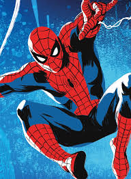

Homem-aranha
Com grande poderes, vem grandes responsabilidades - Ben, Tio.

Amigão da vizinhança, super herói mais pobre de todos os tempos
- 16 anos
- fotógrafo jornalista
- ganhou seus poderes através de uma aranha radioativa
- Discipulo de Tony Stark
- Os pais morreram em um ascidente de avião
- Pobre